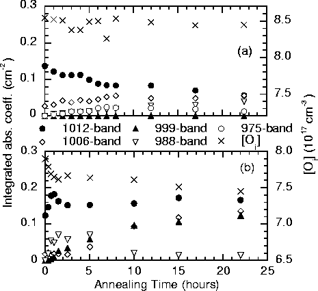

At 370 C where Oi is not mobile, there is a gradual decrease
in the 1012 cm-1 dimer band from its residual levels, accompanied
with an associated increase in the 975-1006 cm-1 bands. These
changes have been directly correlated [160], and are
consistent with a thermal donor model constructed from dimers (see
Chapter 9). There is no notable change in the Oi
levels, suggesting the available dimers are becoming depleted as they
form higher order complexes, but the lack of Oi migration means
that new dimers are not being formed and hence the dimer concentration
is dropping.
C where Oi is not mobile, there is a gradual decrease
in the 1012 cm-1 dimer band from its residual levels, accompanied
with an associated increase in the 975-1006 cm-1 bands. These
changes have been directly correlated [160], and are
consistent with a thermal donor model constructed from dimers (see
Chapter 9). There is no notable change in the Oi
levels, suggesting the available dimers are becoming depleted as they
form higher order complexes, but the lack of Oi migration means
that new dimers are not being formed and hence the dimer concentration
is dropping.
At 450 C when oxygen is mobile
(Figure 6.11b), the story is very different. There
is a rapid initial drop in [Oi], accompanied with a rapid rise in
dimer concentration. Meanwhile there is also an increase in the other
modes. The dimer concentration then tails off, before reaching a
steady state growth along with a similar growth in the 975-1006 modes,
and an associated drop in [Oi]. This can be understood in terms of
an initial glut of dimer formation due to Oi atoms which are close
to the capture radius required to form a dimer. However once these
are exhausted, there is then a drop to steady state Oi diffusion
from a more homogenous background level; the behaviour of the 975-1006
modes is then simply a knock-on from the fluctuation in dimer levels
(note that this is different from the explanation given in
Reference [239]).
C when oxygen is mobile
(Figure 6.11b), the story is very different. There
is a rapid initial drop in [Oi], accompanied with a rapid rise in
dimer concentration. Meanwhile there is also an increase in the other
modes. The dimer concentration then tails off, before reaching a
steady state growth along with a similar growth in the 975-1006 modes,
and an associated drop in [Oi]. This can be understood in terms of
an initial glut of dimer formation due to Oi atoms which are close
to the capture radius required to form a dimer. However once these
are exhausted, there is then a drop to steady state Oi diffusion
from a more homogenous background level; the behaviour of the 975-1006
modes is then simply a knock-on from the fluctuation in dimer levels
(note that this is different from the explanation given in
Reference [239]).
|  |